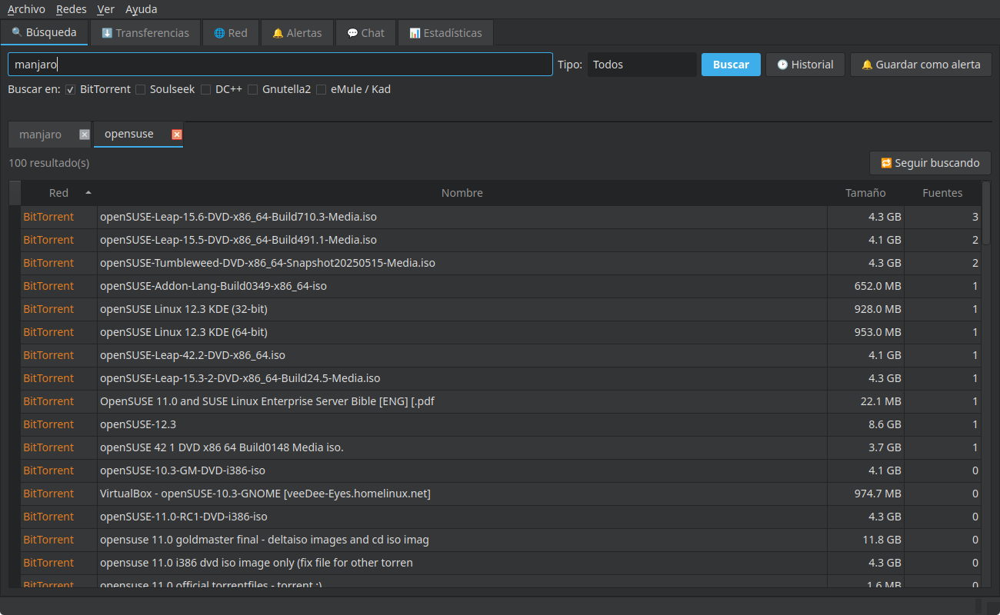
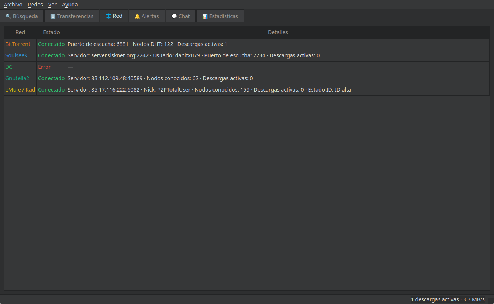
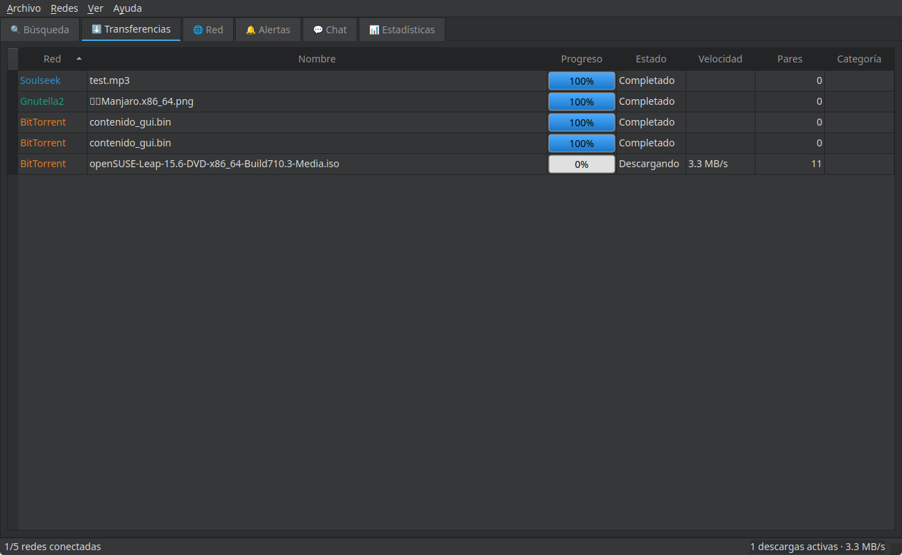

P2P-Total
P2P-Total es un cliente P2P de escritorio multiplataforma (Linux, Windows y macOS) diseñado para integrar cinco de las redes de intercambio de archivos más importantes en una única interfaz unificada y fluida. Todo ello sin dependencias de binarios externos ni clientes secundarios en segundo plano, programado de forma nativa utilizando sockets de Python y la biblioteca de ejecución asíncrona asyncio.
Características Destacadas
- Soporte Multired Real: Conéctate de forma simultánea a BitTorrent, Soulseek, DC++ (NMDC), Gnutella2 y eMule/Kad (eD2k + Kademlia).
- Búsqueda Unificada: Realiza búsquedas simultáneas en las cinco redes de forma transparente, con resultados en tiempo real, eliminación de duplicados y alertas de búsqueda persistentes.
- Implementación de Protocolos Nativos: Escrito desde cero en Python mediante sockets y
asyncio, sin requerir binarios externos ni lanzar otras aplicaciones de fondo. - Gestión Avanzada de Descargas: Cola de descargas reordenable, categorías con carpetas de destino específicas, descarga secuencial de torrents y límites de velocidad globales y por descarga.
- Persistencia e Integridad: Las descargas activas sobreviven a los reinicios de la aplicación, incluyendo verificación de integridad nativa (TTH, SHA1, MD4/AICH y hashes de piezas).
- Aspectos Sociales e Interfaz Moderna: Chat integrado para salas de Soulseek, chats de DC++ (hub y privado) y una interfaz moderna construida con PyQt6 que incluye temas claro y oscuro, notificaciones nativas e integración en la bandeja del sistema.
- Privacidad y Seguridad: Almacena contraseñas de forma segura en el llavero nativo del sistema operativo (Keyring/Keychain), y soporta proxies SOCKS5/HTTP y ofuscación de protocolo eD2k (RC4).
- Modo Portable: Puede ejecutarse directamente desde una unidad USB sin alterar los archivos de configuración del sistema anfitrión.
Capturas de Pantalla



← Volver a la página de aplicaciones